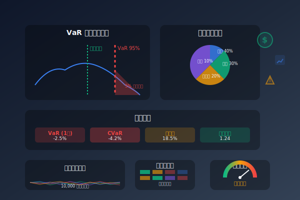

概率统计的应用场景
探索概率与统计在现实世界和科幻场景中的广泛应用
天气预报
使用概率模型预测降水概率、温度范围等气象要素，为决策提供科学依据。

机器学习
统计学习理论是机器学习的基础，贝叶斯方法、最大似然估计等广泛应用于模型训练。

量子力学
量子世界的行为本质上是概率性的，波函数描述了粒子状态的概率分布。

风险评估
金融领域使用VaR（风险价值）等概率模型评估投资组合的潜在损失风险。
宇宙学
概率模型用于描述宇宙结构形成、暗物质分布等宇宙学现象。
医疗诊断
统计方法用于疾病风险预测、诊断准确性评估和临床试验设计。